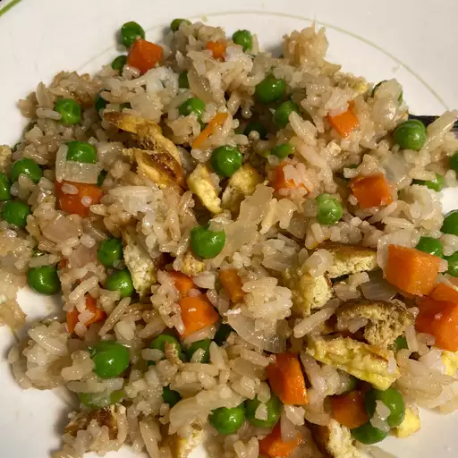

Fried Rice

Today we will make a a simple fried rice recipe that uses the basic ingredients of peas, carrots, eggs, and, the most important ingredient, RICE!
Ingredients
- 2/3 cup chopped carrots
- 1/2 cup frozen green peas
- 2 tablespoons vegetable oil
- 1 glove garlic, minced, or to taste
- 2 large eggs
- 3 cups leftover cooked white rice
- 1 tablespoin soy sauce, or more to taste
- 2 teaspoons sesame oil, or to taste
Directions
Step 1
Place carrots in a small saucepan and cover with water. Bring to a low boil and cook for 3 to 5 minutes. Stir in peas, then immediately drain in a colander.
Step 2
Heat a wok over high heat. Pour in vegetable oil, then stir in carrots, peas, and garlic; cook for about 30 seconds. Add eggs; stir quickly to scramble eggs with vegetables.
Step 3
Stir in cooked rice. Add soy sauce and toss rice to coat. Drizzle with sesame oil and toss again.